Microservices for the frontend
Maurizio Lupo
@sithmel
About myself
Our team
We 💖 microservices
Frontend integration
Frontend integration
Frontend integration
Compoxure
A reverse proxy for page composition
Compoxure
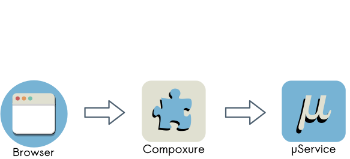Compoxure
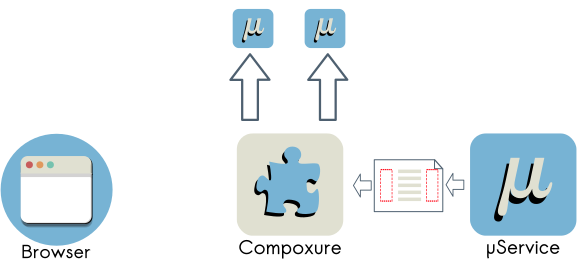Compoxure
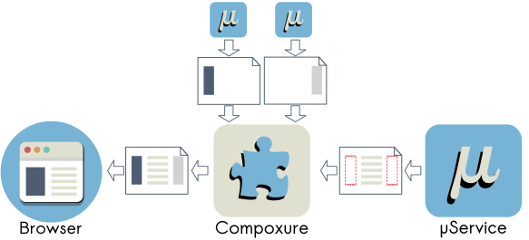Compoxure
<div cx-url="{{server:local}}/application/">
This content will be replaced
</div>
Compoxure
performance and fallback
Compoxure
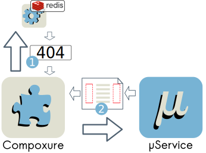Page or fragment not cached
Compoxure
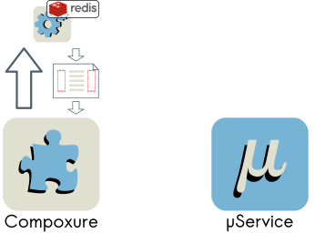Page or fragment cached
Compoxure
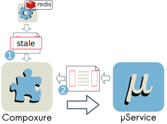Stale cache: ask for fresh page/fragment
Compoxure
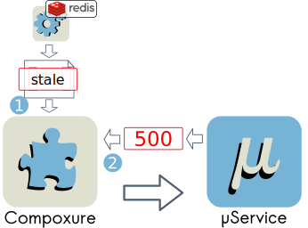Errors on backend service: return cache (even if stale)
Compoxure debugger
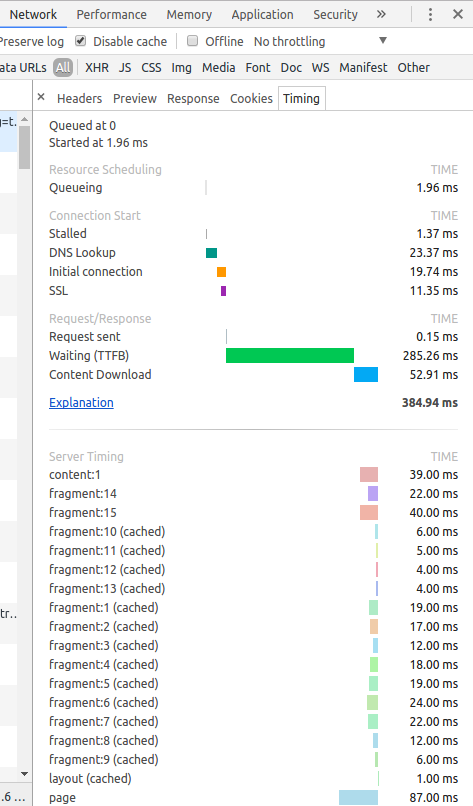Client side JS issues
- Namespace conflicts
- Frontend Performance
- Keep services independent
- Microservices communication
Bundle client side js

...
<script async src="mservice1.js"></script>
...
<script async src="mservice2.js"></script>
Bundle client side js
...
<script async src="mservice1.js"></script>
...
<script async src="mservice2.js"></script>
Bundle client side js
- Namespace conflicts
- Frontend Performance
What about duplicated libraries?
Duplicated libraries

Libraries in global namespace
<script src="react.js"></script> <!-- no async! -->
...
<script async src="mservice1.js"></script>
...
<script async src="mservice2.js"></script>
Libraries in global namespace
- Namespace conflicts
- Keep services independent
- Frontend Performance
Synchronous js problem!
Synchronous js on mobile network
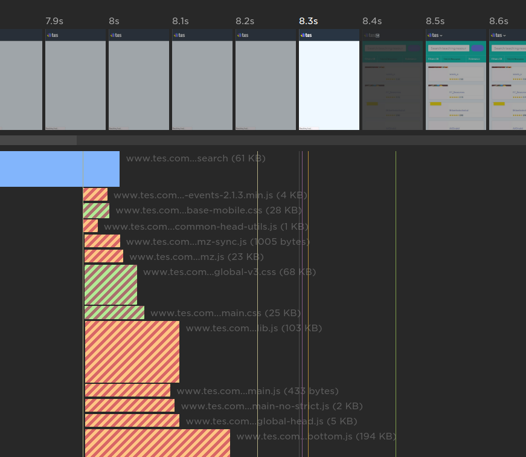Synchronous js on mobile network
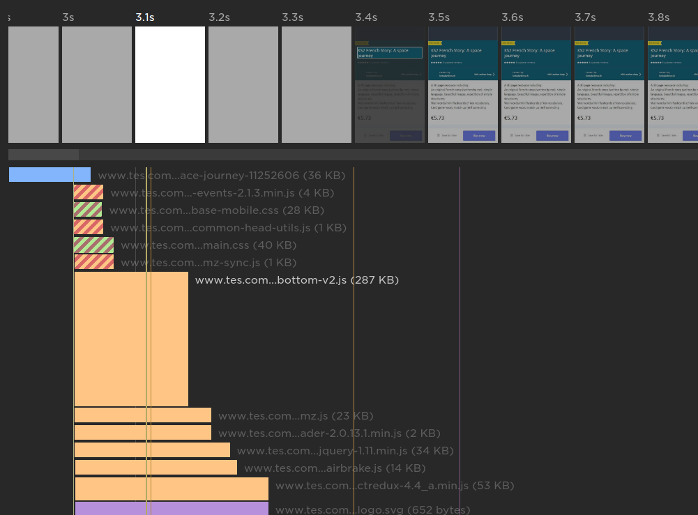async-define
ensure the execution order without polluting the global namespace
Plugins for:
- browserify
- webpack
- rollup
An example with webpack
Service webpack.config.js
const WPAsyncDefine = require('webpack-async-define');
module.exports = {
entry: './app.js',
externals: {
react: 'react-15', // this is the dependency label
},
plugins: [
new WPAsyncDefine()
],
output: {
filename: 'mservice1_ad.js'
}
};
react bundle webpack.config.js
const WPAsyncDefine = require('webpack-async-define');
module.exports = {
entry: './react.js',
plugins: [
new WPAsyncDefine()
],
output: {
filename: 'react-15_ad.js',
library: 'react-15', // library exposed with this label
}
};
react source
const react = require('react');
module.exports = react;
Importing the bundles
<script async src="react-15_ad.js"></script>
...
<script async src="mservice1_ad.js"></script>
...
<script async src="mservice2_ad.js"></script>
Using async-define:
- Namespace conflicts
- Frontend Performance
- Keep services independent
What service loads the dependencies?
<script async src="react-15_ad.js"></script> <!-- ??? -->
...
<script async src="mservice1_ad.js"></script>
...
<script async src="mservice2_ad.js"></script>
Keeping independence with duplications
...
<script async src="react-15_ad.js"></script>
<script async src="mservice1_ad.js"></script>
...
<script async src="react-15_ad.js"></script>
<script async src="mservice2_ad.js"></script>
- An async-define dependency runs only once
- Most browsers load the same resource only once (Chrome, IE10, Safari)
- Compoxure removes duplicated libraries
Update to different versions (1)
...
<script async src="react-15_ad.js"></script>
<script async src="mservice1_ad.js"></script>
...
<script async src="react-16_ad.js"></script>
<script async src="mservice2_ad.js"></script>
Update to different versions (2)
...
<script async src="react-16_ad.js"></script>
<script async src="mservice1_ad.js"></script>
...
<script async src="react-16_ad.js"></script>
<script async src="mservice2_ad.js"></script>
Using async-define (with duplication):
- Namespace conflicts
- Frontend Performance
- Keep services independent
Microservices communication
Using the global namespace
mservice1:
...
window.mservice1ExternalAPI = mservice1ExternalAPI;
mservice2:
...
window.mservice1ExternalAPI.do();
...
Microservices communication
Using the global namespace
- Namespace conflicts
- Keep services independent
Solution: use an event bus
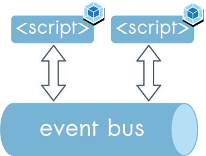Solution: use an event bus
- Microservices communication
- Namespace conflicts
- Keep services independent
Using an event bus
Expose the bus in the global namespace
const or = require('occamsrazor');
window.eventBus = or();
app-job-ad
window.eventBus.trigger('open-login');
app-authentication
window.eventBus.on('open-login', (event) => {
... open the login modal ...
});
app-authentication

window.eventBus.trigger('logged-in', 'sithmel3');
app-job-ad

window.eventBus.on('logged-in', (event, username) => {
... open to "apply" modal ...
});
Other use cases
- permanent events
- broadcast messages across tabs
- client side routing across microservices
Links
@sithmel